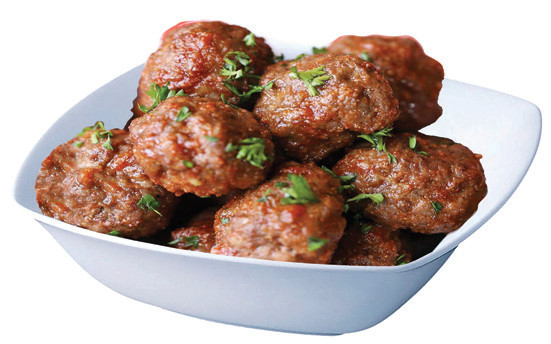
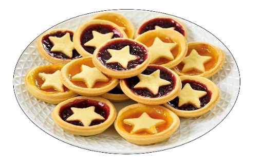
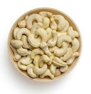

91


Food and Human Nutrition

Form Two
dinner is eaten earlier in the day. Unlike dinner, supper is usually more casual and homely. Like other meals, it provides essential nutrients that support proper body function and it helps to restore energy levels. Supper should consist of light but well-balanced foods with its size and composition influenced by personal preferences, cultural practices and individual dietary needs.
Snacks and bites
A snack refers to a small portion of food eaten in between regular meals and it is not necessarily nutritionally balanced. It
includes foods such as samosas, rice cakes,
sandwiches, meatballs, rock buns, ground
nuts and banana fritters. Fruits such as mangoes, apples and ripe bananas can also serve as a healthy snack. A bite, on
the other hand, refers to a small light food
item typically bite-sized that can be eaten
in a single mouthful. Examples include cashew nuts, popcorn, sunflower seeds,
slices of carrots and cucumbers. While all
bites are considered snacks, not all snacks
are bites. In planning family meals, it is
better to include healthy snacks and bites
because they can help to reduce the portion
size consumed during the main meal and
support better eating habits. Figure 4.1 shows some snacks and bites.



Meat balls Jam tarts Cashew nuts
Figure 4. 1: Snacks and bites
Importance of family meals
Family meals are important because they:
1. create bond and improve relationships among family members. bonding promotes children’s mental and emotional well-being.
2. encorage healthy eating habits. Families eating together tend to make better food choices.
3. enable family members to create memories in their lives.
4. provide opportunities to learn about family customs, traditions and cultural values.

17/09/2025 16:30